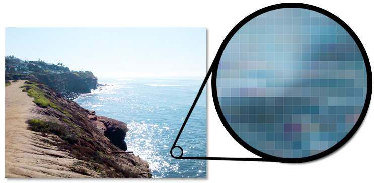
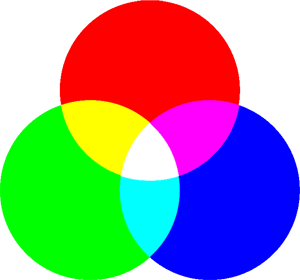
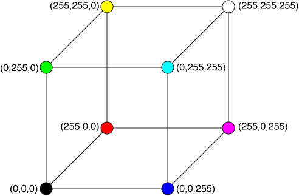
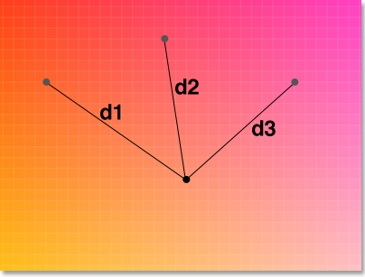
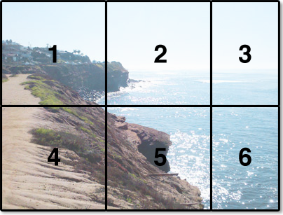

Here's how it works.
Format the image.
Images can be represented on a computer by a two-dimensional grid. Each
cell in this grid is called a pixel
, and a pixel is one distinct
color. The following image shows a photo, and zooming in shows the
individual pixels:

Photographs tend to contain many distinct colors. Most digital cameras take pictures in JPG form, which can contain millions of distinct colors each. The sheer quantity of colors poses a problem when making cross-stitch patterns. If a pattern is created that uses millions of distinct colors, that means millions of colors of thread that need to be bought. To solve this problem, images are scaled and compressed.
Scaling is the simpler of the two steps, and it is performed first. This program treats one pixel as one stitch. So, if a pattern is supposed to be 300 stitches wide and the provided image is 1,000 pixels wide, the image must be scaled down to fit the boundaries.
Once the image is scaled down, the number of colors in the image needs to be reduced. The more the image is compressed, the fewer colors it uses. Color reduction is something of an art, since there's no scientific way to say when an image has been reduced too much. The only way to tell that an image has been reduced too much is that it starts to look bad. An example should help illustrate this point:
Uncompressed Photo
Reduced to 64 Colors

Reduced to 32 Colors
Reduced to 16 Colors
Somewhere between 16 and 32 colors, the image starts to look noticeably worse than it should be. A cross-stitch pattern made from the 16-color image probably wouldn't look very good. Since there really is no way to tell how much compression is too much without looking at the image, the program takes the compression level as an input so it can be tweaked.
Round to the nearest color.
Since pixels are cells of light, their colors are controlled by adjusting the intensity of red, green, and blue light. If no amount of any color is supplied, the resulting color is black. If a full amount of all three colors are provided, then the resulting color is white. All other colors lie somewhere in between.
Since all the colors added together make white, this color model is known
as additive
or RGB
(for red, green, blue
). The
additive color model is illustrated below:

This image gives some insight into how other colors are made. For example:
Most modern web browsers allow for 256 steps between a color being
entirely off and entirely on. This resolution allows for a total of
2563 = 16,777,216 unique colors to be displayed. It might
not be immediately apparent yet that every single color
can be created by mixing red, green, and blue light. To get there, it
can be helpful to introduce the concept of the RGB cube
:

Colors are represented in browsers by their position on the RGB cube. For example, black contains none of any channel, so it can be represented like so:
Here are some more examples:
Once the image has been resized and compressed, each color is analyzed. Craft stores only carry certain colors of thread, so XStitch has an internal database of 425 DMC® thread colors and their corresponding RGB values.
These DMC® colors constitute a set of points over the RGB cube. While
colors from images can be from any point on the cube, only DMC® points
can be included in the final pattern. So, each color in the image must be
rounded
to the nearest DMC® color. The following exaggerated
example shows a point being compared to three neighboring DMC® colors.
The point yielding the minimum distance is chosen to replace the color.

The distance between two points (x, y, z) and (x0, y0, z0) in three-dimensional space can be calculated by the following equation:
By replacing each color in the image with its closest DMC® color, a cross-stitch pattern can be created that uses only valid colors.
Generate the pattern.
Once the image has been resized, compressed, and each color has been
replaced with its closest DMC® color, a pattern can be generated.
Images are split into chunks of 50x50-stitch segments, and each segment
is placed onto a single page. The last row and the last column may contain
less than 50 stitches if the image dimensions are not multiples of 50.
The pages are ordered for each row, for each column
, as illustrated below:
